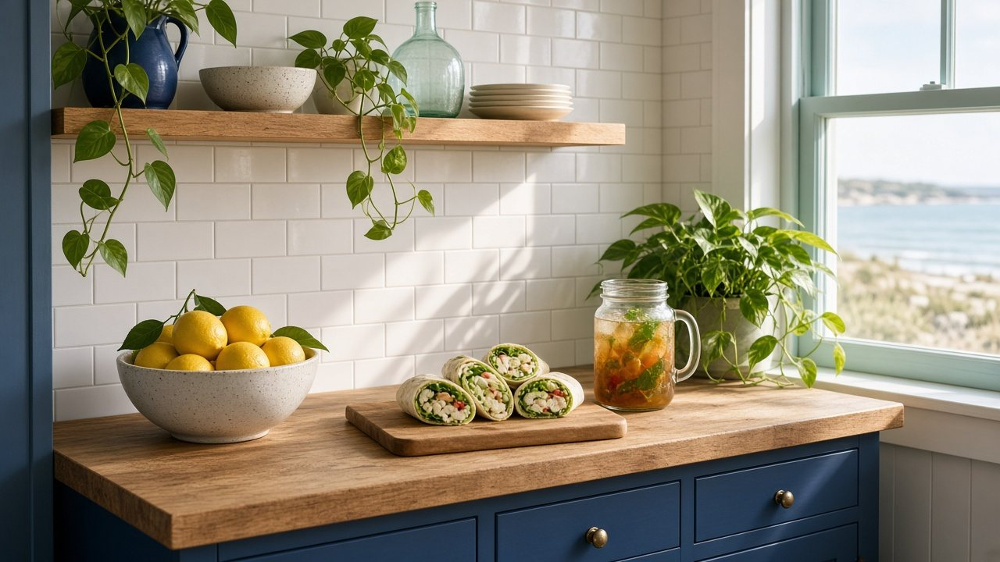

Gifford Street at Jones Road
Homeport
The magazine’s home base. Lunch, two dental offices, a chiropractor, a nutrition shop and a family insurance agency share one parking lot.
- Cape Island CaféLunch · 316 Gifford Street
- Falmouth Dental AssociatesFamily & cosmetic dentistry · 210 Jones Rd (Homeport Office Park)
- Root to RiseRecovery community · 316 Gifford Street (at Cape Island Café)
- Arthur D. Calfee Insurance AgencyInsurance agency (Homeport) · 336 Gifford Street
- Dental Group of FalmouthGeneral dentistry (Homeport) · 344 Gifford Street
- Harmony Network ChiropracticChiropractic (Homeport) · 346 Gifford Street
- Vital NutritionSupplements & health food · 358 Gifford Street